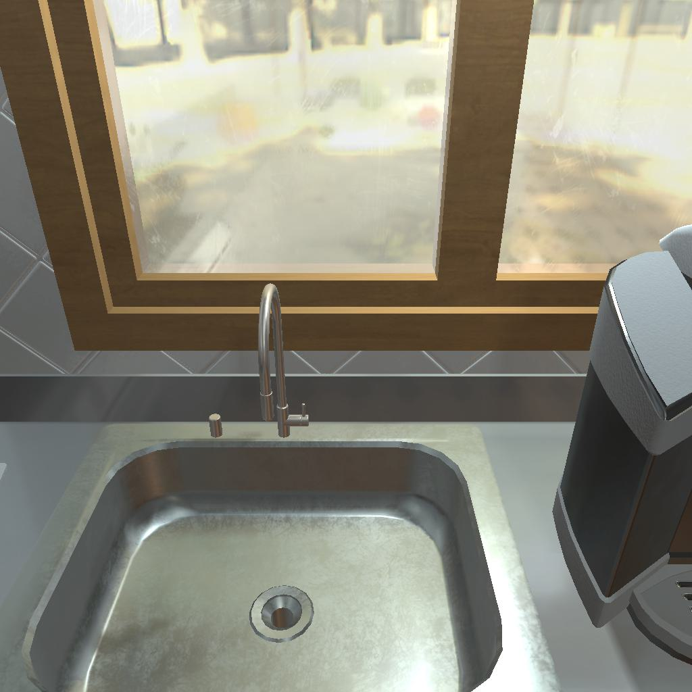

---------------------------------------------------------task: 12---------------------------------------------------------
--------------------------------------------------------------------------------------------------------------------------------------------------------------------
--------------------------------------------------------------------------------------------------------------------------------------------------------------------
Step:--------------------------------------------------------------------------9-------------------------------------------------------------------------------
----------------------------------------
VLM Prompt:
Image1:
Image2:
**Instruction**
1. Analyze the provided images to identify all visible household objects and compare the difference between images (e.h. whether the object is opened or not and taken on hand or not), focusing on those relevant to the task description "put a clean tomato in countertop."
2. Use the analysis of images and the task hint "The agent must find an object of the desired type, pick it up, go to a sink or a basin, clean the object with a sink or basin, and then find the correct location to place it and put it down there. The agent does not need to use soap bottle or faucet to clean the object, and the agent just needs to do action that is "clean the object with the sink or sink basin"." to answer the question: what is the most reasonable action in the choices for the task description "put a clean tomato in countertop"?
3. Decide and write the answer using the template: The answer is: (i): , where i is the real number. If there is no desired object in images, search every place based on **Initial Observation** to find the object. And if no one is exactly correct, choose a similar answer.
**Initial Observation**
You are in the middle of a room. Looking quickly around you, you can see cabinet (1-6), microwave (1), countertop (1-2), coffeemachine (1), toaster (1), sink (1), sinkbasin (1), fridge (1)
**Answer Choices**
(1): go to cabinet 1
(2): go to cabinet 2
(3): go to cabinet 3
(4): go to microwave 1
(5): go to cabinet 4
(6): go to cabinet 5
(7): go to cabinet 6
(8): go to countertop 1
(9): go to coffeemachine 1
(10): go to toaster 1
(11): go to countertop 2
(12): go to sink 1
(13): go to fridge 1
(14): take faucet 1 from sinkbasin 1
(15): take plate 1 from sinkbasin 1
(16): examine sinkbasin 1
**Answer**
Let's think step by step by following the instructions.
----------------------------------------
----------------------------------------
Original Response:
Firstly, we need to find a clean tomato. The images provided show a sink, a faucet, and a sink basin, but there is no tomato visible in either image. Therefore, we need to search for the tomato based on the initial observation.
Since tomatoes are typically stored in a fridge or a cabinet, the most reasonable places to look for a tomato would be in the fridge or one of the cabinets. After finding the tomato, the next step would be to go to the sink or sink basin to clean it. Since cleaning the object does not require using the soap bottle or faucet and just needs the action of "clean the object with the sink or sink basin," we do not need to focus on the faucet or the soap bottle.
Once the tomato is cleaned, the task description states that the clean tomato needs to be put on the countertop. Therefore, after cleaning the tomato, the agent should go to the countertop to place it there.
Based on this analysis, the most reasonable actions from the provided choices would be to first go to the fridge or one of the cabinets to find a tomato, then go to the sink to clean it, and finally go to the countertop to place the clean tomato.
Since the images do not show a tomato and we need to search for one, the first action should be:
The answer is: (13): go to fridge 1
----------------------------------------
----------------------------------------
>>> Refine Original VLM Response and Get Pure Action: go to fridge 1
----------------------------------------
-----------------------------------------------------------------
Running time: 12.132580280303955 seconds
Total Money: 5.492710000000002
-----------------------------------------------------------------
-----------------------------------------------------------------
Text Observation:You arrive at loc 13. The fridge 1 is open. On the fridge 1, you see a apple 1, and a potato 1.
-----------------------------------------------------------------
UNSUCCEED